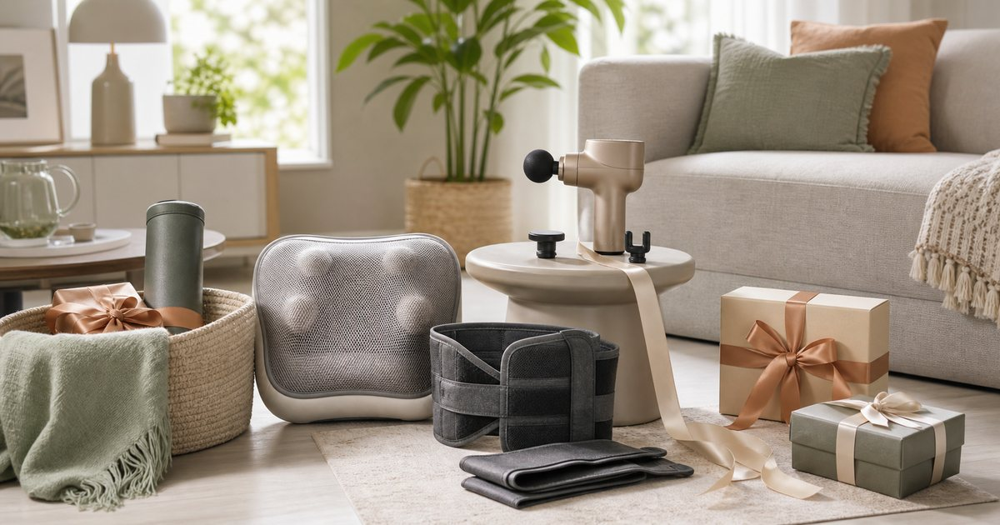
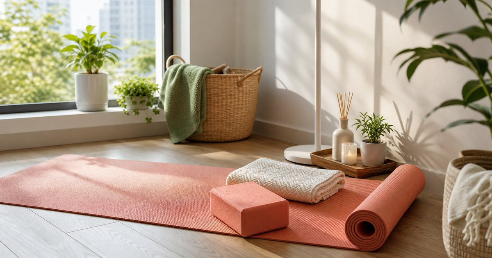

熟齡健康恢復與身體節奏
春夏熱感、睡眠、更年期、肌力、低壓運動與旅行恢復，先收成一條可執行的日常路徑。
進入策展 →給 40+ 熟齡女性的身體節奏與日常修復指南。這裡聚焦睡眠、春夏熱感、更年期變化、 肌力與步行耐力、旅行疲勞，以及能真正放回生活裡的低壓健康習慣。
先從身體每天發出的訊號開始整理，再往單篇指南深入。
從身體恢復、運動節奏到熟齡健康習慣，這裡整理本分類最新上線的內容。

照護用品先分成安全動線、日常消耗、清潔防護與專業確認，家裡才不會被臨時需求打亂。
閱讀全文 →
把加班、通勤和下午空檔的點心準備好，避免臨時用高壓情緒決定吃什麼。
閱讀全文 →
從浴室、移位、收納、濾水與家人協作，整理更清楚的居家照護用品判斷。
閱讀全文 →
從空間、收納、使用習慣與提醒事項，整理按摩椅、按摩槍、護具與生活用品的選擇順序。
閱讀全文 →
從地面、收納、光線與香氛，整理小宅也能維持的低壓伸展角落。
閱讀全文 →
從護膝、護腰、鞋包重量與工作動線，整理久坐久站族更可持續的日常配置。
閱讀全文 →
這不僅是早餐，更是生產力駭客。深入評測 Athletic Greens (AG1) 與 Huel Black Edition，從營養密度、方便性與飽足感，找出 2026 最強的液態燃料...
閱讀全文 →
長期低頭與久坐是現代菁英的職業傷害。深度評測 Theragun Pro 與 Hypervolt 2 Pro，解析震幅、推力與噪音，找出最適合放在你 CEO 辦公室的放鬆神器...
閱讀全文 →
探索 2026 年瑜伽新趨勢。解析如何透過腦波數據優化冥想深度，達成身心合一...
閱讀全文 →
解析 2026 機能服飾新標準：色彩光療。探索內嵌 LED 修復光能如何優化肌肉恢復...
閱讀全文 →
帶您進入 2026 年的全息瑜伽室。解析全息攝影與 AI 指導如何創造無與倫比的身心修煉...
閱讀全文 →
探索如何選擇最適合的瑜珈墊，建立個人瑜珈空間，體驗永續瑜珈生活方式。 包含真實用戶體驗分享、專家建議、選購檢查清單，以及瑜珈墊與身心健康的關聯分析...
閱讀完整指南 →
在數位時代專注力急遽下降的危機中，正念瑜伽提供了一個科學且有效的解決方案。探索瑜伽如何透過身體練習與正念結合，幫助我們重新掌握專注力，提升工作效率與生活品質...
閱讀全文 →
晨間瑜伽能為一天帶來活力與平靜。從溫和的伸展開始，透過太陽致敬式喚醒全身， 再以冥想收尾。這套完整的20分鐘晨間瑜伽序列，不僅能提升身體柔軟度，更能培養專注力與正念...
閱讀全文 →
結合重量訓練、有氧運動與功能性訓練的綜合健身計畫。由專業教練設計的12週課程， 針對不同體能水平提供客製化建議，幫助您有效率地達成健身目標，同時避免運動傷害...
閱讀全文 →
從Lululemon到Nike，從Alo Yoga到Outdoor Voices，運動品牌正在重新定義機能服飾的美學標準。 探索最新的運動時尚趨勢，了解如何選擇既能支持運動表現，又能展現個人風格的服飾...
閱讀全文 →
正念練習不僅是一種技巧，更是一種生活態度。從呼吸冥想到行走禪，從飲食正念到睡前放鬆， 學習如何在日常生活中融入正念練習，培養覺察力，減輕壓力，提升生活品質...
閱讀全文 →
了解運動前後的營養需求，掌握蛋白質、碳水化合物與脂肪的理想比例。從增肌減脂到提升運動表現， 專業營養師為您解析如何透過科學飲食計畫，讓運動效果事半功倍...
閱讀全文 →
不需要昂貴的器材或大空間，也能建立有效的居家健身習慣。從基礎的瑜伽墊到多功能的阻力帶， 了解如何選購實用的居家健身器材，並設計適合自己的訓練計畫，隨時隨地保持最佳狀態...
閱讀全文 →
肌少症是現代人面臨的隱形健康危機。從30歲開始，肌肉量每年以1-2%的速度流失，50歲後流失速度更快。 了解肌少症的威脅，及早開始儲備肌肉量，推薦居家簡單有氧運動，包括超慢跑等實用方法...
閱讀全文 →